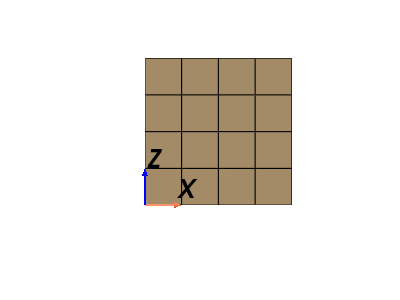
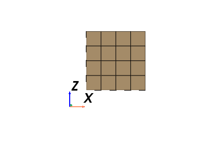
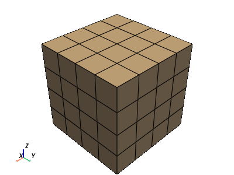
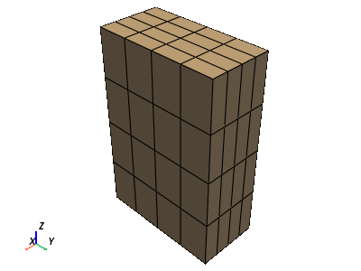
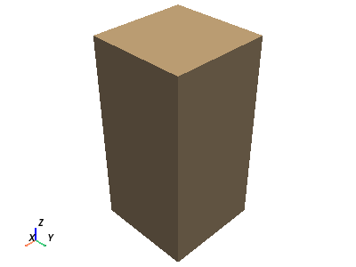
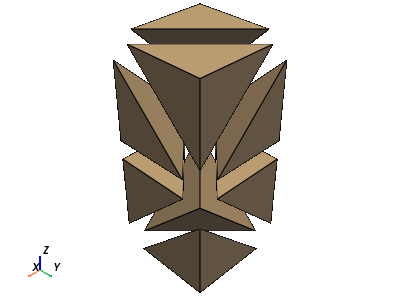
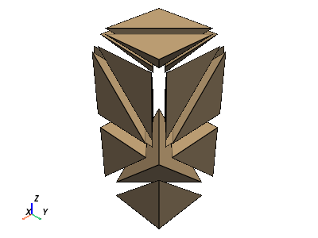

pyvista.UniformGrid#
- class UniformGrid(uinput=None, *args, dimensions=None, spacing=(1.0, 1.0, 1.0), origin=(0.0, 0.0, 0.0), deep=False, **kwargs)[source]#
Models datasets with uniform spacing in the three coordinate directions.
Can be initialized in one of several ways:
Create empty grid
Initialize from a vtk.vtkImageData object
Initialize based on dimensions, cell spacing, and origin.
Changed in version 0.33.0: First argument must now be either a path or
vtk.vtkImageData. Use keyword arguments to specify the dimensions, spacing, and origin of the uniform grid.Changed in version 0.37.0: The
dimsparameter has been renamed todimensions.- Parameters:
- uinput
str,vtk.vtkImageData,pyvista.UniformGrid,optional Filename or dataset to initialize the uniform grid from. If set, remainder of arguments are ignored.
- dimensionsiterable,
optional Dimensions of the uniform grid.
- spacingiterable,
optional Spacing of the uniform in each dimension. Defaults to
(1.0, 1.0, 1.0). Must be positive.- originiterable,
optional Origin of the uniform grid. Defaults to
(0.0, 0.0, 0.0).- deepbool,
optional Whether to deep copy a
vtk.vtkImageDataobject. Default isFalse. Keyword only.
- uinput
Examples
Create an empty UniformGrid.
>>> import pyvista >>> grid = pyvista.UniformGrid()
Initialize from a
vtk.vtkImageDataobject.>>> import vtk >>> vtkgrid = vtk.vtkImageData() >>> grid = pyvista.UniformGrid(vtkgrid)
Initialize using using just the grid dimensions and default spacing and origin. These must be keyword arguments.
>>> grid = pyvista.UniformGrid(dimensions=(10, 10, 10))
Initialize using dimensions and spacing.
>>> grid = pyvista.UniformGrid( ... dimensions=(10, 10, 10), ... spacing=(2, 1, 5), ... )
Initialize using dimensions, spacing, and an origin.
>>> grid = pyvista.UniformGrid( ... dimensions=(10, 10, 10), ... spacing=(2, 1, 5), ... origin=(10, 35, 50), ... )
Initialize from another UniformGrid.
>>> grid = pyvista.UniformGrid( ... dimensions=(10, 10, 10), ... spacing=(2, 1, 5), ... origin=(10, 35, 50), ... ) >>> grid_from_grid = pyvista.UniformGrid(grid) >>> grid_from_grid == grid True
- cast_to_rectilinear_grid() RectilinearGrid[source]#
Cast this uniform grid to a rectilinear grid.
- Returns:
pyvista.RectilinearGridThis uniform grid as a rectilinear grid.
- cast_to_structured_grid() StructuredGrid[source]#
Cast this uniform grid to a structured grid.
- Returns:
pyvista.StructuredGridThis grid as a structured grid.
- property extent: tuple#
Return or set the extent of the UniformGrid.
The extent is simply the first and last indices for each of the three axes.
Examples
Create a
UniformGridand show its extent.>>> import pyvista >>> grid = pyvista.UniformGrid(dimensions=(10, 10, 10)) >>> grid.extent (0, 9, 0, 9, 0, 9)
>>> grid.extent = (2, 5, 2, 5, 2, 5) >>> grid.extent (2, 5, 2, 5, 2, 5)
Note how this also modifies the grid bounds and dimensions. Since we use default spacing of 1 here, the bounds match the extent exactly.
>>> grid.bounds (2.0, 5.0, 2.0, 5.0, 2.0, 5.0) >>> grid.dimensions (4, 4, 4)
- property origin: Tuple[float]#
Return the origin of the grid (bottom southwest corner).
Examples
>>> import pyvista >>> grid = pyvista.UniformGrid(dimensions=(5, 5, 5)) >>> grid.origin (0.0, 0.0, 0.0)
Show how the origin is in the bottom “southwest” corner of the UniformGrid.
>>> pl = pyvista.Plotter() >>> _ = pl.add_mesh(grid, show_edges=True) >>> _ = pl.add_axes_at_origin(ylabel=None) >>> pl.camera_position = 'xz' >>> pl.show()
 Set the origin to
(1, 1, 1)and show how this shifts the UniformGrid.>>> grid.origin = (1, 1, 1) >>> pl = pyvista.Plotter() >>> _ = pl.add_mesh(grid, show_edges=True) >>> _ = pl.add_axes_at_origin(ylabel=None) >>> pl.camera_position = 'xz' >>> pl.show()

- property points: ndarray#
Build a copy of the implicitly defined points as a numpy array.
Notes
The
pointsfor apyvista.UniformGridcannot be set.Examples
>>> import pyvista >>> grid = pyvista.UniformGrid(dimensions=(2, 2, 2)) >>> grid.points array([[0., 0., 0.], [1., 0., 0.], [0., 1., 0.], [1., 1., 0.], [0., 0., 1.], [1., 0., 1.], [0., 1., 1.], [1., 1., 1.]])
- property spacing: Tuple[float, float, float]#
Return or set the spacing for each axial direction.
Notes
Spacing must be non-negative. While VTK accepts negative spacing, this results in unexpected behavior. See: pyvista/pyvista#1967
Examples
Create a 5 x 5 x 5 uniform grid.
>>> import pyvista >>> grid = pyvista.UniformGrid(dimensions=(5, 5, 5)) >>> grid.spacing (1.0, 1.0, 1.0) >>> grid.plot(show_edges=True)
 Modify the spacing to
(1, 2, 3)>>> grid.spacing = (1, 2, 3) >>> grid.plot(show_edges=True)

- to_tetrahedra(tetra_per_cell: int = 5, mixed: Union[Sequence[int], bool] = False, pass_cell_ids: bool = False, progress_bar: bool = False)#
Create a tetrahedral mesh structured grid.
- Parameters:
- tetra_per_cell
int, default: 5 The number of tetrahedrons to divide each cell into. Can be either
5,6, or12. Ifmixed=True, this value is overridden.- mixed
str, bool, sequence, default:False When set, subdivides some cells into 5 and some cells into 12. Set to
Trueto use the active cell scalars of thepyvista.RectilinearGridto be either 5 or 12 to determining the number of tetrahedra to generate per cell.When a sequence, uses these values to subdivide the cells. When a string uses a cell array rather than the active array to determine the number of tetrahedra to generate per cell.
- pass_cell_idsbool, default:
False Set to
Trueto make the tetrahedra have scalar data indicating which cell they came from in the originalpyvista.RectilinearGrid.- progress_barbool,
optional Display a progress bar to indicate progress.
- tetra_per_cell
- Returns:
pyvista.UnstructuredGridUnstructuredGrid containing the tetrahedral cells.
Examples
Divide a rectangular grid into tetrahedrons. Each cell contains by default 5 tetrahedrons.
First, create and plot the grid.
>>> import numpy as np >>> import pyvista as pv >>> xrng = np.linspace(0, 1, 2) >>> yrng = np.linspace(0, 1, 2) >>> zrng = np.linspace(0, 2, 3) >>> grid = pv.RectilinearGrid(xrng, yrng, zrng) >>> grid.plot()
 Now, generate the tetrahedra plot in the exploded view of the cell.
>>> tet_grid = grid.to_tetrahedra() >>> tet_grid.explode(factor=0.5).plot(show_edges=True)
 Take the same grid but divide the first cell into 5 cells and the other cell into 12 tetrahedrons per cell.
>>> tet_grid = grid.to_tetrahedra(mixed=[5, 12]) >>> tet_grid.explode(factor=0.5).plot(show_edges=True)

- property x: ndarray#
Return all the X points.
Examples
>>> import pyvista >>> grid = pyvista.UniformGrid(dimensions=(2, 2, 2)) >>> grid.x array([0., 1., 0., 1., 0., 1., 0., 1.])